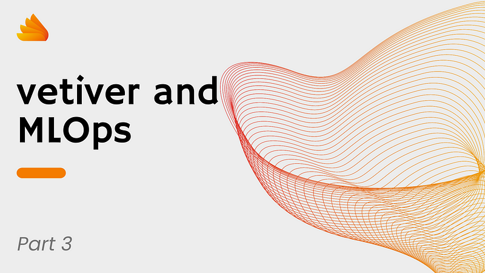
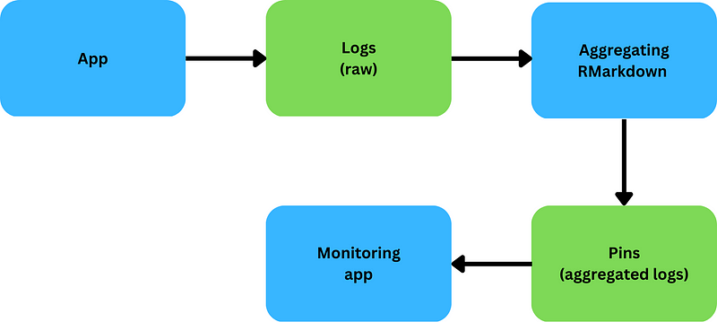

#THIS WILL TAKE A FEW MINUTES (5 to 10min)
# start the plumber from auxScripts/startAPI.bash first
########################
board <- pins::board_local()
# OPTIONAL: clean logs
for (i in c('requests', 'responses','performance')){
unlink(here::here('logs', i), force = TRUE, recursive = TRUE)
dir.create(here::here('logs', i))
}
# call the model with the keep-out data we saved
keep_out <- board %>% pins::pin_read('keep_out')
# split it into three to mock 3 different days. Each day has ~1/3 of the data
set.seed(222)
data_split <- initial_split(keep_out, prop = .33)
days <- list()
days$day1 <- training(data_split)
tmpDf <- testing(data_split)
data_split <- initial_split(tmpDf, prop = .5)
days$day2 <- training(data_split)
days$day3 <- testing(data_split)
# loop through the 3 days datasets
for(i in 1:3){
for (k in seq(1:nrow(days[[i]]))){
preds <- httr::POST("<http://127.0.0.1:4023/predict_flights>",
body = jsonlite::toJSON(days[[i]][k,]),
encode = "json")
}
# rename the log files to change the data. Our processing script will use
# the file name to guess the date, rather than the timestamp in the logs
file.rename(here::here('logs', 'requests',
paste0(as.character(Sys.Date()), '.log')),
here::here('logs', 'requests',
paste0(as.character(Sys.Date()+i), '.log')))
file.rename(here::here('logs', 'responses',
paste0(as.character(Sys.Date()), '.log')),
here::here('logs', 'responses',
paste0(as.character(Sys.Date()+i), '.log')))
file.rename(here::here('logs', 'performance',
paste0(as.character(Sys.Date()), '.log')),
here::here('logs', 'performance',
paste0(as.character(Sys.Date()+i), '.log')))
}
This is the third article in a series about building an MLOps solution using the vetiver R (and Python) package. I suggest reading the first part before continuing with this article.
Introduction
In the previous articles, we explored how to design a viable MLOps solution using (almost) only the R ecosystem. We then developed a model and a deployment pipeline to make it available through a REST API. Now that our model is ready to serve the business, we need to monitor it. This article will focus on monitoring the model.
Overview
When software fails, there are clear signs. A service becomes unreachable, an error message is displayed, or some other form of reporting manifests itself.
Models fail silently. They simply start to return inaccurate answers. Until a subject matter expert looks at the predictions made, those errors will go undetected. Furthermore, models failures can have catastrophic repercussions for the business. We need to monitor our models.
There are several things we might want to monitor:
- Technical: response time, load, reachability of the model API, etc.
- Business: inputs and outputs. This allows us to verify that there is no data drift (input monitoring) and that the predictions have the expected distribution (output monitoring). If we have access to the ground truth, we can also compare it with the predictions to assess the accuracy of our model.
The best way to monitor models is through an interactive dashboard that allows us to drill down on details. Shiny is a well-known dashboard-building framework that we can use for this purpose.
We will be building a very simple dashboard. In fact, it is way too simple for production purposes, but it will be enough to give us a feeling of the effort required to build such a system.
Architecture
The monitoring app displays aggregated logs. If there are several thousand calls to the models, it is not feasible for the app to digest the logs on-demand. Instead, there should be a third component that pre-processes the logs and stores them somewhere accessible (e.g., a database, pins, a blob storage).
In our example, we use a manually-run script to do this step. In real life, you can convert the script to a scheduled R Markdown deployed on rsconnect. The schedule will depends on the nature of your model. If your model is only hit once a week, there is little value in having an hourly schedule.

Create the logs
Before we can analyze the logs, we need to create some logs. We will simulate some traffic to the API using a script.
We first make sure the model API is running by executing the bash script ./auxScripts/startAPI.bash. Once the API is running, we can call the R script ./auxScript/prepare_logs_for_monitoring.R. This script will take about 10 minutes to run, and it will create 3 new log folders:
./logs/requeststo log requests../logs/responsesto log responses../log/performanceto log response times.
The logs are generated from the keep-out dataset. Each folder will have three files, each one corresponding to a different date.
Log pre-processing script
Our pre-processing is minimal. We parse the logs and convert the content to a dataframe.
Note that we save the processed logs to pins. This is unlikely a good choice in real-world applications. You will want to use a database instead. This will make searching the logs easier. In real-world, you might also need to consider data access implications if your logs contain any personal information.
# get logs of calls
pinLogData <- function(logType, board){
# list all the available log files
# note that in a prod env you will not save the logs in the same folder
# where the app files are
allLogFiles <- list.files(here::here('logs', logType))
allLogData <- list()
# extract the info from each log file
for(i in seq_along(allLogFiles)){
readF <- read_file(here::here('logs', logType, allLogFiles[i]))
# parse
readF <- unlist(
stringr::str_split(
readF,
'INFO \\\\\\\\\[[0-9]*-[0-9]*-[0-9]* [0-9]*:[0-9]*:[0-9]*\\\\\\\\\]\\\\\\\\\[[0-9]*\\\\\\\\\] '
)
)
readF <- readF[nchar(readF)>0]
readF <- lapply(readF, function(d){jsonlite::fromJSON(d)})
readF <- bind_rows(readF)
readF$dateIs <- as.Date(stringr::str_replace(allLogFiles[i], '.log', ''))
allLogData[[i]] <- readF
}
allLogData <- bind_rows(allLogData)
board %>% pins::pin_write(allLogData, logType)
return(invisible(NULL))
}
pinLogData('requests', board)
pinLogData('responses', board)
pinLogData('performance', board)The monitoring app
The monitoring app displays data from the logs and metadata from the vetiver model.
From the metadata:
metadata <- unlist(board %>% pins::pin_meta('flights_fit'))
model_versions <- board %>% pins::pin_versions('flights_fit')`From the logs:
- Distribution of predictions.
- Number of times the model has been called.
- Accuracy plot. The keep-out dataset included the ground truth. We use it to calculate accuracy.
- Response time plot.
You can find the full code for the app in the repo.
There are a few key things to discuss about the app. The more important ones are about the choice of Shiny rather than flexdashboard and the scalability of the solution.
Why a Shiny app?
{vetiver} provides a basic monitoring app with the command vetiver_dashboard(). However, this is a {flexdashboard}. Personally, I dislike {flexdashboard}, and I will never recommend it for production purposes. I have never seen a well-built {flexdashboard}. They lead to a single, long, and unmaintainable file, and they are not as testable as Shiny apps.
Therefore, I went for a Shiny app. The Shiny app I provide as an example is by no means production-ready. But it is more manageable than a {flexdashboard}.
If you want to know what it takes to make the app professional-grade, you can have a look at these articles.
Note that our monitoring app is not really an app: it is more a report at this stage. There is no interactivity with the dashboard. A real-life solution will enable logs exploration and drill-down through interactivity.
Scalability
This app is designed as a monitoring tool for our model. But what if we have several models? Do we create an app for each model? Do we create an uber dashboard with links to the dedicated dashboards?
These are very important questions that need to be considered while we start to plan our own fully-fledged MLOps solution.
Wrap up
In this article we put together a monitoring app for our MLOps solution. Our goal was to have a tool that can warn us if anything starts to go wrong.
The app is functional, but extremely rough. There is a lot of work to be done to bring it to production-grade and to make it scalable.
Coming next
In the next and last article of this series, we will have our retrospective meeting. We have now built a rudimentary end-to-end MLOps solution using the vetiver package, so we are well positioned to comment on what works well and what the limitations are. These information will help us determine if the effort was worth it, if it even makes sense to build a vetiver-based MLOps solution.